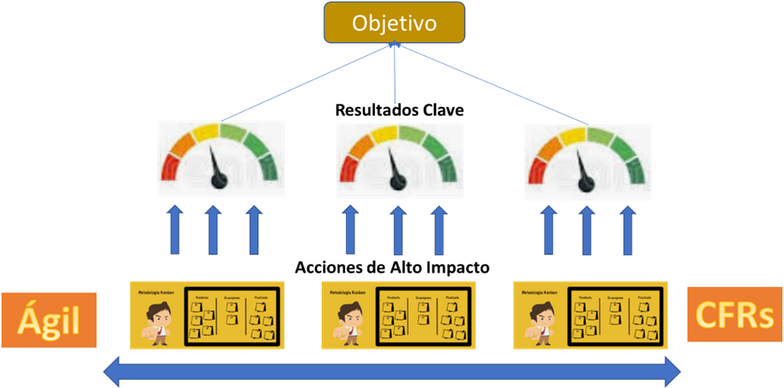

Gestión Ágil de Objetivos y Resultados Clave (OKR)
por José Agustín Espino, PMP
Consultor ASTRAN
Febrero 2021
Lo urgente y lo importante, un eterno conflicto de prioridad en las organizaciones. En otras palabras, la operación diaria y la materialización de objetivos.
En la mayoría de las empresas se generan, al menos una vez al año, objetivos o metas; sólo para que, al final del período, notemos que con el paso del tiempo y con la “urgencia” (necesidades operativas del día a día) estos objetivos y metas quedaron diluidos.
En el entorno actual etiquetado como VUCA, (Siglas en inglés de Vulnerabilidad, Incertidumbre, Complejidad y Ambigüedad) los objetivos pueden surgir en diferentes períodos para mantenernos vigentes o como medio de innovación. Estos OBJETIVOS representa el QUÉ queremos lograr… surge la pregunta: ¿CÓMO hacer para que los objetivos se conviertan en realidad? En el mercado existen diferentes metodologías encaminadas a la “Realización de objetivos”, “Disciplinas para la ejecución”, “Balance Scorecard”, etc., sin embargo, la complejidad en la aplicación de estas técnicas dificulta la obtención de resultados.
Hoy en día se requiere un modelo de gestión ágil para lograr resultados; éste debe ser simple, garantizando, por un lado, el entendimiento claro y transparente del objetivo a alcanzar y por el otro, la identificación y el compromiso de los equipos de trabajo involucrados en su consecución.
Existen importantes factores que deben ser considerados para lograr resultados:
-
La operación (lo urgente) no se puede detener.
-
Se requiere apartar tiempo para dedicarlo a lo importante (objetivos y metas).
-
La responsabilidad del logro de objetivos es global, desde el más alto nivel hasta el operativo.
-
La responsabilidad es mejor asumida cuando cada participante define sus propias metas.
-
Todas las metas y actividades deben estar alineadas al objetivo principal.
-
La transparencia es vital.
-
Se vale fracasar.
-
Los resultados están desvinculados de bonos o castigos.
-
Los éxitos deben celebrarse.
Si queremos hacer realidad nuestros sueños de mejora, debemos entender que en la mayoría de los casos la línea que conecta el diseño de los objetivos y el logro de estos es difusa. Surge la necesidad de alinear de forma segura a los líderes y a los equipos hacia las decisiones, prácticas y procesos correctos de acuerdo con sus principios.
La Gestión Ágil de Objetivos y Resultados Clave (OKR) es un modelo de gestión simple en el que se han fusionado diferentes metodologías y prácticas en tres pilares:
-
OKR “Objetivos y Resultados Clave” (Objectives and Key Results) Este marco metodológico nace en Intel y fue la clave para que Google cambiara el mundo. Ha sido implementada con éxito en empresas como Amazon, Intuit, Netscape, Twitter, LinkedIn, entre muchas otras.
-
CFR “Conversación, Retroalimentación y Reconocimiento” (Conversation, Feedback and Recognition) Consiste en una interacción constante entre colaboradores y supervisores, así como entre pares.
-
La Gestión Ágil Organizacional permite un adecuado seguimiento de los compromisos y las acciones de alto impacto asegurando que se realicen oportunamente y se mantengan actualizadas con el dinamismo propio de esta práctica.
|
La cobertura de este modelo se puede iniciar en grupos pequeños e irse escalando en diferentes equipos hasta ser implementado en organizaciones de miles de colaboradores.
Una de las principales razones de la efectividad de este modelo es que gradualmente va transformando los “valores” de la organización, fomentando que cada uno de los participantes entienda claramente los objetivos, los haga suyos y se comprometa en su consecución.
¿Hacia dónde tienes que ir? y ¿Cómo vas a saber que ya has llegado?
La primera pregunta la podrás contestar definiendo los objetivos relevantes, comunicándolos de una manera clara y permitiendo a los equipos de trabajo crear sus propios objetivos o resultados clave; la segunda pregunta, manteniendo una cadencia de rendición de cuentas y monitoreando el avance para asegurar que estamos alcanzando los resultados clave. Para cumplir con lo anterior es muy efectivo el siguiente modelo:
Modelo de Gestión Ágil de Objetivos y Resultados Clave (OKR)
La Gestión Ágil de Objetivos y Resultados Clave (OKR) nos orienta a establecer las bases para la fijación clara y transparente de objetivos y de los resultados clave que llevarán a su consecución. Nos ayuda a que los Objetivos se enfoquen en lo realmente importante y a establecer de manera consensuada el camino para lograrlos.
Fomenta la identificación de Acciones de alto impacto orientadas al progreso mediante métricas de avance y con un monitoreo constante para validar que estamos en la senda correcta.
Los Resultados Clave son retos que conducen a la realización del OBJETIVO y motivan a los equipos de trabajo a pensar en metas más retadoras promoviendo su crecimiento, ya que están exentos de bonos o castigos.
La gestión Ágil organizacional fomenta el seguimiento, la rendición de cuentas, el cumplimiento de responsabilidades y aprovecha la flexibilidad característica de ágil. Esto permite la identificación de las ACCIONES de Alto Impacto que pudieran ser necesario implementar para mantenernos en el camino correcto.
La Conversación, Retroalimentación y Reconocimiento (CFRs) fortalecen y empoderan el trabajo en equipo, fomentan la colaboración, activan las redes internas, estimulan la responsabilidad y la mejora continua en todos los niveles de la organización. Asimismo, ayudan a mejorar el desempeño, manteniendo la motivación de los participantes y permitiéndoles ser y sentirse parte de la organización, ya que aportan conocimiento y experiencia.
Es recomendable iniciar la utilización del modelo Gestión Ágil de Objetivos y Resultados Clave (OKR) con un grupo reducido y posteriormente extenderlo hacia otros grupos. Conforme se van obteniendo resultados, normalmente el efecto de difusión se presenta de manera natural, ya que al notar su eficiencia en las áreas que lo aplican, otras áreas se interesan y su integración se facilita.
Si estás interesado en obtener más información, en ASTRAN podrás encontrar el apoyo necesario para iniciar la incorporación del modelo de Gestión Ágil de Objetivos y Resultados Clave (OKR) en tu organización.